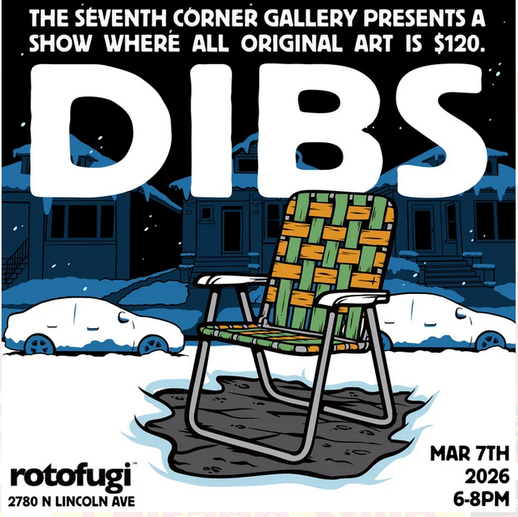

DIBS
The Seventh Corner Gallery’s popular DIBS show returns for 2026! Our 4th annual Dibs event is coming to a new venue- Rotofugi! Swing by Chicago’s best designer toy store and buy original art from the city’s hottest artists for cheap. Contributors include Penny Pinch, Gene Ha, Jonski, Danny Martinez and many more. All pieces are $120, so show up early and call Dibs on the next piece in your art collection!